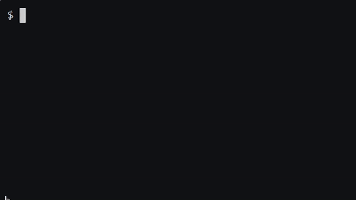
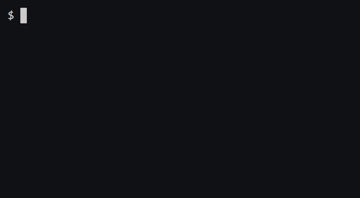

Завдання №4
Прикладна аналітика
Читання та запис файлів
1. Рядки коду
Один із способів виміряти складність програми - підрахувати кількість рядків коду (LOC), не враховуючи порожні рядки та коментарі. Наприклад, програма типу:
# Say hello
name = input("What's your name? ")
print(f"hello, {name}")має лише два рядки коду, а не чотири, оскільки перший рядок є коментарем, а другий - порожній (тобто просто пробіли).
Це не так вже й багато, тож, швидше за все, програма не така вже й складна. Звичайно, те, що одна програма (або навіть функція) має більше рядків коду, ніж інша, не обов’язково означає, що вона складніша. Наприклад, функція на зразок:
def is_even(n):
if n % 2 == 0:
return True
else:
return Falseнасправді не вдвічі складніша за таку функцію, як
def is_even(n):
return n % 2 == 0навіть незважаючи на те, що перша має (більш ніж) удвічі більше рядків коду. Насправді, перша може бути простішою, якщо її легше читати! Тож рядки коду слід сприймати з обережністю.
Завдання: у файлі lines.py реалізуйте програму, яка очікує рівно один аргумент командного рядка, ім’я (або шлях) файлу Python, і виводить кількість рядків коду у цьому файлі, виключаючи коментарі та порожні рядки. Якщо користувач не вказав рівно один аргумент командного рядка, або якщо ім’я вказаного файлу не закінчується на .py, або якщо вказаного файлу не існує, програма повинна завершити роботу через sys.exit.
Вважайте, що будь-який рядок, який починається з #, перед яким необов’язково ставиться пробіл, є коментарем (docstring не слід вважати коментарем). Вважатимемо, що будь-який рядок, який містить лише пробіли, є порожнім.
- Пам’ятайте, що
strмає досить багато методів, див. методи рядків, включаючиlstripіstartswith. - Зверніть увагу, що
openможе викликати помилкуFileNotFoundError, див. посилання. - Можливо, вам буде корисно протестувати вашу програму.
Демонстрація роботи програми:

2. Шаурма
Напевно одна з найпопулярніших страв сучасного стріт-фуду — це шаурма та її різновиди. Її можна зустріти біля кожного метро, ТРЦ або зупинки громадського транспорту.
Студенти, як правило, купують шаурму з курятини, але в меню також є з яловичиною, фалафель та готові набори як показано в CSV-файлі chicken.csv:
Chicken Shawarma,Small,Large
Classic,120.00,190.00
Assorted,155.00,225.00
Spicy,150.00,220.00
Pineapple,150.00,220.00
Double cheese,150.00,220.00Дивіться також файл veal.csv для отримання CSV-файлу шаурми з телятини.
Звичайно, CSV-файл - не найзручніший формат для перегляду. Красивішою може бути таблиця, відформатована у форматі ASCII art, як ця:
+-------------------+--------+--------+
| Chicken Shawarma | Small | Large |
+===================+========+========+
| Classic | 120.00 | 190.00 |
+-------------------+--------+--------+
| Assorted | 155.00 | 225.00 |
+-------------------+--------+--------+
| Spicy | 150.00 | 220.00 |
+-------------------+--------+--------+
| Pineapple | 150.00 | 220.00 |
+-------------------+--------+--------+
| Double cheese | 150.00 | 220.00 |
+-------------------+--------+--------+Завдання: у файлі з назвою shawarma.py реалізуйте програму, яка очікує рівно один аргумент командного рядка, ім’я (або шлях) CSV-файлу і виводить таблицю у форматі ASCII art за допомогою tabulate, пакета на PyPI за адресою https://pypi.org/project/tabulate.
Відформатуйте таблицю за допомогою grid формату бібліотеки. Якщо користувач не вказав жодного аргументу командного рядка, або якщо ім’я вказаного файлу не закінчується на .csv, або якщо вказаного файлу не існує, програма має завершити роботу за допомогою sys.exit.
- Нагадаємо, що модуль
csvмає досить багато методів, серед якихreaderтаDictReader. - Зверніть увагу, що
openможе викликати помилкуFileNotFoundError. - Зверніть увагу, що пакет
tabulateмістить лише одну функцію. Ви можете встановити пакет за допомогою:
terminal
pip install tabulate3. Очищення
Дані також часто потребують “очищення”, наприклад, шляхом переформатування, щоб значення мали узгоджений, якщо не зручніший, формат. Розглянемо, наприклад, цей CSV-файл студентів1, before.csv, нижче:
name,house
"Abbott, Hannah",Hufflepuff
"Bell, Katie",Gryffindor
"Bones, Susan",Hufflepuff
"Boot, Terry",Ravenclaw
"Brown, Lavender",Gryffindor
"Bulstrode, Millicent",Slytherin
"Chang, Cho",Ravenclaw
"Clearwater, Penelope",Ravenclaw
"Crabbe, Vincent",Slytherin
"Creevey, Colin",Gryffindor
"Creevey, Dennis",Gryffindor
"Diggory, Cedric",Hufflepuff
"Edgecombe, Marietta",Ravenclaw
"Finch-Fletchley, Justin",Hufflepuff
"Finnigan, Seamus",Gryffindor
"Goldstein, Anthony",Ravenclaw
"Goyle, Gregory",Slytherin
"Granger, Hermione",Gryffindor
"Johnson, Angelina",Gryffindor
"Jordan, Lee",Gryffindor
"Longbottom, Neville",Gryffindor
"Lovegood, Luna",Ravenclaw
"Lupin, Remus",Gryffindor
"Malfoy, Draco",Slytherin
"Malfoy, Scorpius",Slytherin
"Macmillan, Ernie",Hufflepuff
"McGonagall, Minerva",Gryffindor
"Midgen, Eloise",Gryffindor
"McLaggen, Cormac",Gryffindor
"Montague, Graham",Slytherin
"Nott, Theodore",Slytherin
"Parkinson, Pansy",Slytherin
"Patil, Padma",Gryffindor
"Patil, Parvati",Gryffindor
"Potter, Harry",Gryffindor
"Riddle, Tom",Slytherin
"Robins, Demelza",Gryffindor
"Scamander, Newt",Hufflepuff
"Slughorn, Horace",Slytherin
"Smith, Zacharias",Hufflepuff
"Snape, Severus",Slytherin
"Spinnet, Alicia",Gryffindor
"Sprout, Pomona",Hufflepuff
"Thomas, Dean",Gryffindor
"Vane, Romilda",Gryffindor
"Warren, Myrtle",Ravenclaw
"Weasley, Fred",Gryffindor
"Weasley, George",Gryffindor
"Weasley, Ginny",Gryffindor
"Weasley, Percy",Gryffindor
"Weasley, Ron",Gryffindor
"Wood, Oliver",Gryffindor
"Zabini, Blaise",SlytherinХоча кожен “рядок” у файлі має три значення (прізвище, ім’я та будинок), перші два об’єднано в один “стовпчик” (ім’я), взято в подвійні лапки, а прізвище та ім’я розділено комою та пробілом. Не ідеальний варіант, якщо Гоґвортс хоче надіслати кожному учневі стандартного листа, оскільки було б дивно починати лист з цього:
Dear Potter, Harry,
А не, наприклад, з ним:
Dear Harry,
Завдання: У файлі з назвою scourgify.py реалізуйте програму, яка:
- Очікує від користувача два аргументи командного рядка:
- ім’я існуючого CSV-файлу для читання на вході, стовпці якого мають бути, у порядку,
nameтаhouse, та - ім’я нового CSV-файлу для запису у вихідний файл, стовпці якого мають бути за порядком:
first,lastтаhouse.
- ім’я існуючого CSV-файлу для читання на вході, стовпці якого мають бути, у порядку,
- Перетворює вхідні дані у вихідні, розбиваючи кожне
nameнаfirst(ім’я) таlast(прізвище). Припустимо, що кожен студент має як ім’я, так і прізвище.
Якщо користувач не введе рівно два аргументи командного рядка, або якщо перший аргумент не може бути прочитаний, програма повинна завершити роботу через sys.exit з повідомленням про помилку.
- Зверніть увагу, що модуль csv постачається з великою кількістю методів, серед яких DictReader та DictWriter.
- Зверніть увагу, що ви можете вказати
DictWriterзаписати назви полів у файл за допомогоюwriteheaderбез аргументів.
Демонстрація роботи програми:
4. FIT-shirt
Завдання: у файлі з назвою shirt.py реалізуйте програму, яка очікує рівно два аргументи командного рядка:
- у sys.argv[1] - ім’я (або шлях) до файлу JPEG або PNG, який потрібно прочитати (тобто відкрити) на вході
- у sys.argv[2] - ім’я (або шлях) до файлу JPEG або PNG, який потрібно записати (тобто зберегти) на виході.
Потім програма повинна накласти shirt.png (з прозорим фоном) на вхідні дані після зміни розміру та обрізання вхідних даних до однакового розміру, зберігши результат як вихідні дані.
{kind=link}
Відкрийте вхідні дані за допомогою Image.open, змініть розмір і обріжте вхідні дані за допомогою ImageOps.fit, використовуючи значення за замовчуванням для параметрів method, bleed і centering, накладіть футболку за допомогою Image.paste і збережіть результат за допомогою Image.save.
Програма повинна завершити роботу через sys.exit у випадку:
- якщо користувач не вказав рівно два аргументи командного рядка,
- якщо назви вхідних і вихідних даних не закінчуються на .jpg, .jpeg або .png, незалежно від регістру,
- якщо ім’я вхідних даних не має такого ж розширення, як ім’я вихідних даних, або
- якщо вказаний вхідний файл не існує.
Припустимо, що вхідними даними буде фотографія людини, яка позує у правильній позі, як на цих демонстраційних прикладах, так що після зміни розміру та обрізання сорочка буде ідеально сидіти на ній.
Якщо ви хочете запустити свою програму на власній фотографії, спочатку перетягніть фотографію до файлового провідника VS Code у ту саму папку, що й shirt.py. Не потрібно надсилати жодних фотографій разом з кодом.
Ви можете визначити розширення файлу за допомогою os.path.splitext.
openможе викликати помилкуFileNotFoundError.Пакет
Pillowпостачається з великою кількістю класів і методів. Можливо, вам буде корисно ознайомитися з його довідником і довідкою. Ви можете встановити пакет за допомогою:terminal
pip install PillowВи можете відкрити зображення (наприклад,
shirt.png) за допомогою коду типу:shirt = Image.open("shirt.png")Ви можете отримати ширину та висоту цього зображення у вигляді кортежу з кодом типу:
size = shirt.sizeІ ви можете накласти це зображення на інше (наприклад, фото) за допомогою коду на кшталт
photo.paste(shirt, shirt)де перша
shirtпредставляє зображення для накладання, а друга - “маску”, яка вказує, які пікселі на фото потрібно оновити.Ви можете відкрити зображення (наприклад,
shirt.png) у VS Code, запустивши:terminal
code shirt.pngабо двічі клацнувши його іконку у файловому провіднику VS Code.
Демонстрація роботи програми:

Footnotes
Ці дані були отримані з https://en.wikipedia.org/wiki/List_of_Harry_Potter_characters.↩︎